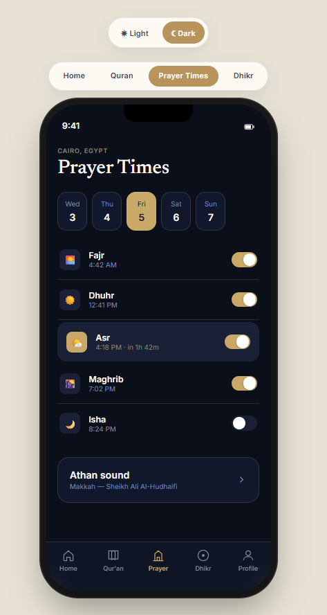

I design interfaces in Figma and then build them — React, HTML/CSS — so what ships is what was designed. Currently a Computer Science student in Cairo, working freelance across web and mobile product design.
Each labeled honestly by what it actually is — personal concept work, a team project, or freelance design for another founder's product.
Website, customer loyalty app, and internal ops dashboard for a 5-branch Cairo cafe brand — built from a real competitive audit, not a visual brief. Working React/HTML, not static comps.

Mobile app concept combining prayer times, Qur'an reading progress, and daily dhikr in one home view. Designed in full light and dark modes with a consistent bottom-nav pattern across screens.
A three-role platform (student, staff, admin) built with a university team. I owned the frontend: login system, home/welcome pages, and course pages — focused on UI logic and user flow across roles.
A message sent to Pancakes with real purchase intent went unanswered. The same test on a direct competitor got an automated reply in seconds. That single, measurable gap — not a rebrand wish — became the brief.
Three connected surfaces: a website that communicates the social/dessert identity, a low-friction loyalty app (WhatsApp/QR — no download required), and an owner-facing dashboard to see whether any of it worked.
Ran actual WCAG contrast math on the shipped color tokens rather than eyeballing it — found two real failures before they reached a client.
Every screen starts as an annotated structural pass before any color or type decision gets made.
Evidence first — competitive testing, not assumption. Real findings, ranked by leverage.
Annotated lo-fi structure with a spacing guide, before any visual identity is applied.
Tokens defined once — color, type, spacing — and propagated everywhere from a single config.
Working code, not a static comp — so what's reviewed is what would actually ship.
I'm a second-year Computer Science student in Cairo, designing UI/UX in Figma alongside my coursework. Coming from a CS background means I design with technical feasibility already in the room — I can tell you why a layout is annoying to build before it becomes your engineer's problem.
Most of my design work doubles as freelance and consulting practice for local businesses — which means starting from a real constraint or a real audit finding, not a blank canvas. That habit shows up in every project here.